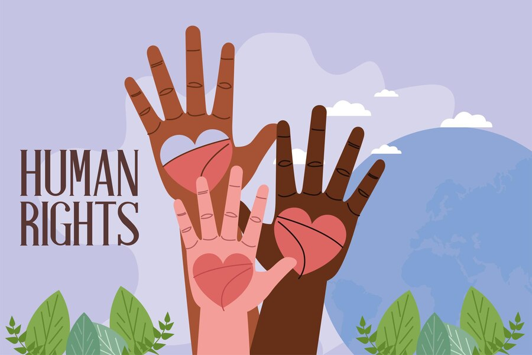
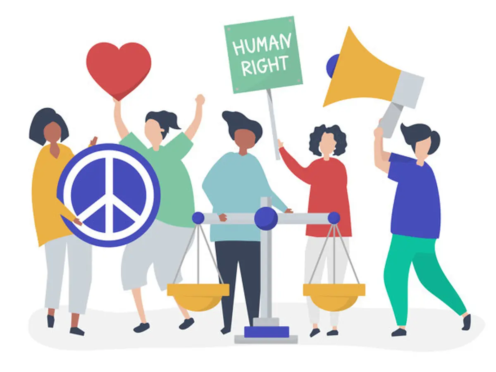

Kerja Sama Multilateral di Bidang Hak Asasi Manusia


Hak asasi manusia (HAM) adalah prinsip universal yang menegaskan bahwa setiap individu memiliki hak yang setara tanpa diskriminasi. Dalam konteks kerja sama multilateral, banyak negara bekerja sama melalui organisasi dan forum internasional untuk melindungi, mempromosikan, dan menegakkan hak asasi manusia di seluruh dunia.
Ciri-Ciri Kerja Sama Multilateral di Bidang HAM
Prinsip Universalitas
Menekankan bahwa hak asasi manusia berlaku untuk semua orang tanpa memandang latar belakang.
Kolaborasi Negara-Negara Anggota
Negara bekerja bersama untuk menciptakan standar global dan berbagi praktik terbaik.
Mekanisme Pemantauan dan Penegakan
Lembaga seperti UNHRC atau ICC memiliki wewenang untuk menyelidiki dan mengambil tindakan terhadap pelanggaran HAM.
Partisipasi Aktor Non-Negara
Organisasi non-pemerintah (NGO), seperti Amnesty International dan Human Rights Watch, sering terlibat dalam memantau dan memberikan rekomendasi.
Manfaat Kerja Sama Multilateral di Bidang HAM
Standar Global yang Konsisten
Menjamin perlindungan HAM diterapkan di seluruh dunia.
Penegakan Hukum Internasional
Memastikan pelaku pelanggaran HAM berat dihukum, tanpa memandang status atau lokasi mereka.
Dukungan terhadap Negara Lemah
Memberikan bantuan teknis dan finansial untuk meningkatkan kapasitas negara-negara berkembang dalam melindungi HAM.
Meningkatkan Kesadaran Publik
Mendorong partisipasi masyarakat sipil dalam melindungi HAM.